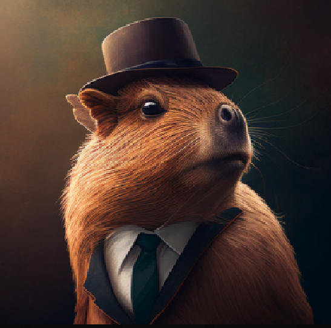

Servicii oferite
Relax
I can't believe that capybara, just lounging around all day, completely carefree! It's infuriating how it embodies relaxation, with its nonchalant attitude and lazy demeanor. Why must it flaunt its stress-free lifestyle, while we humans toil away endlessly?
Orange standing
That capybara, balancing an orange on its head, is just showing off! As if its laid-back nature wasn't enough, now it's flaunting this ridiculous trick. We're left feeling inferior, watching a rodent defy gravity and norms, making us question our own capabilities.
Eating
Watching that capybara eat is infuriating! It's always munching on something, seemingly never satisfied. The way it chews loudly with no regard for others only adds to the frustration. Can't it eat in moderation, or at least with a little more decorum?
Portfolio
DAY 1 🍊
Capibara created god
In the beginning, there was only Capybara, the largest rodent in the world. But Capybara was lonely, and so he decided to create a companion. He worked tirelessly for one day, shaping the earth, the sky, and the sea into a beautiful world, and from the mud, he molded a small figure in his own image.
Then, Capybara breathed life into the figure, and it became the first god. This god, grateful to its creator, decided to create more companions for Capybara, and thus began the pantheon of gods and goddesses that would rule over the world.
DAY 2 💡
Light
Then God said, ‘Let there be light’; and there was light. And God saw the light, that it was good; and God divided the light from the darkness. God called the light Day, and the darkness He called Night. So the evening and the morning were the first day
DAY 3 🌏
Atmosphere/Firmament
Then God said, ‘Let there be a firmament in the midst of the waters, and let it divide the waters from the waters.’ Thus God made the firmament, and divided the waters which were under the firmament from the waters which were above the firmament; and it was so. And God called the firmament Heaven. So the evening and the morning were the second day
DAY 4 🪴
Dry ground & plants
Then God said, ‘Let the waters under the heavens be gathered together into one place, and let the dry land appear’; and it was so. And God called the dry land Earth, and the gathering together of the waters He called Seas. And God saw that it was good
DAY 5 ✨
Sun, moon & stars
Then God said, ‘Let there be lights in the firmament of the heavens to divide the day from the night; and let them be for signs and seasons, and for days and years; and let them be for lights in the firmament of the heavens to give light on the earth’; and it was so. Then God made two great lights: the greater light to rule the day, and the lesser light to rule the night.
DAY 6 🦭
Birds & sea creatures
Then God said, ‘Let the waters abound with an abundance of living creatures, and let birds fly above the earth across the face of the firmament of the heavens.’ So God created great sea creatures and every living thing that moves, with which the waters abounded, according to their kind, and every winged bird according to its kind.
DAY 7 🗿
Land animals & humans
Then God said, ‘Let the earth bring forth the living creature according to its kind: cattle and creeping thing and beast of the earth, each according to its kind’; and it was so. And God made the beast of the earth according to its kind, cattle according to its kind, and everything that creeps on the earth according to its kind. And God saw that it was good.
DAY 8 💤
The Sabbath of rest
Thus the heavens and the earth, and all the host of them, were finished. And on the seventh day God ended His work which He had done, and He rested on the seventh day from all His work which He had done. Then God blessed the seventh day and sanctified it, because in it He rested from all His work which God had created and made
Call me maybe
Information:
Postal address
Capybara, the Supreme Rodent,
(512) 751-6667,
Austin, Texas area.
Tel: (555) 123-4567
Email: capybara@rodentkingdom.com
Social media:


Write a message here:
Name:
Email:
Subject:
Message:
Email:
Subject:
Message: